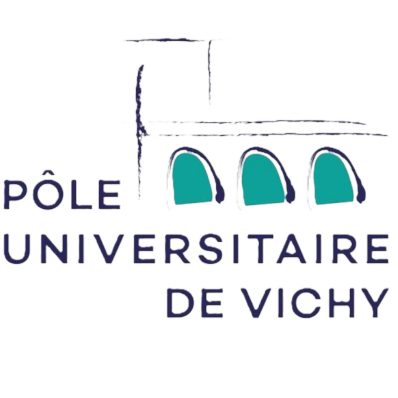
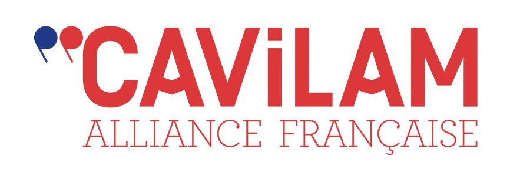

Stage & Alternance au Pôle Universitaire
Pôle Universitaire de Vichy
Le Pôle Universitaire de Vichy, situé au cœur de la ville thermale, accueille près de 3 000 étudiants au sein de plus de 40 filières et 15 bâtiments. Le service informatique du Pôle gère 3 entités : le pôle lui-même, l'Institut de Formation en Masso-Kinésithérapie (IFMK) et le CAVILAM.
 
Mon Parcours au Pôle
J'ai eu l'occasion de travailler au sein du Pôle Universitaire en tant que stagiaire durant ma dernière période de stage de Bac Pro en 2023. J'y ai découvert le fonctionnement d'un réseau informatique de grande taille et j'ai pu développer mes compétences en matière de maintenance et de dépannage, ce qui m'a permis d'y obtenir un contrat d'alternance pour mon BTS.
Retour Personnel
Travailler au sein d'une petite équipe est un atout majeur pour moi, car cela me permet d'apprendre directement auprès de professionnels et de développer des compétences essentielles pour mon avenir. Cette proximité et l'accompagnement au quotidien m'aident à progresser rapidement et à acquérir une solide expertise dans mon domaine.